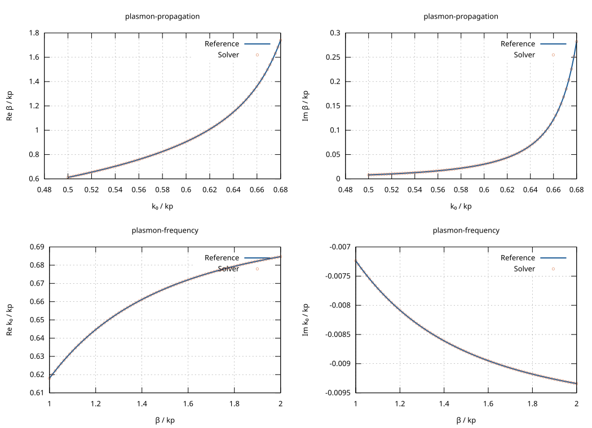
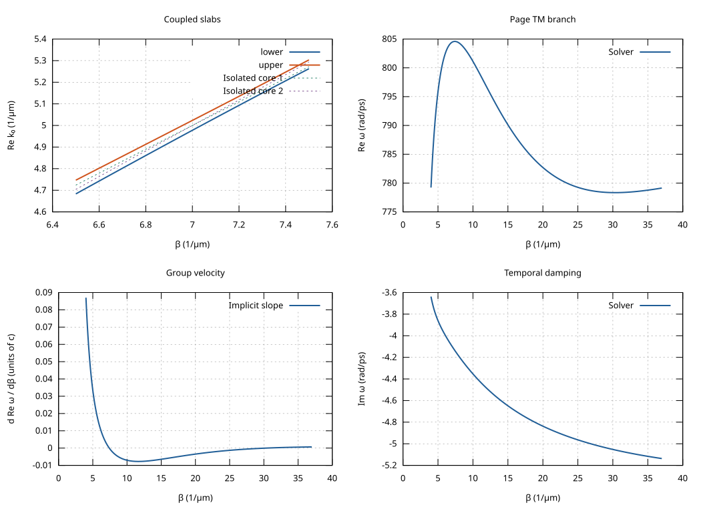
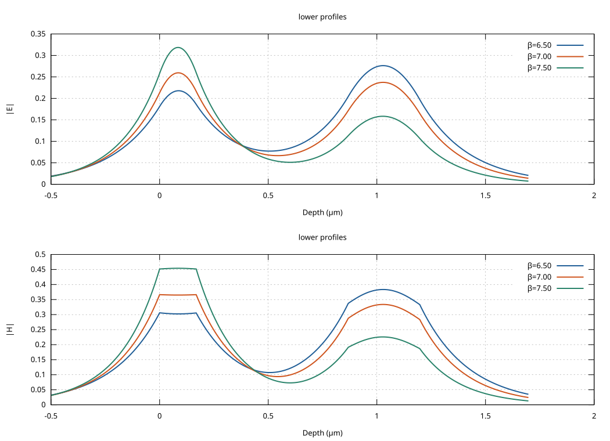
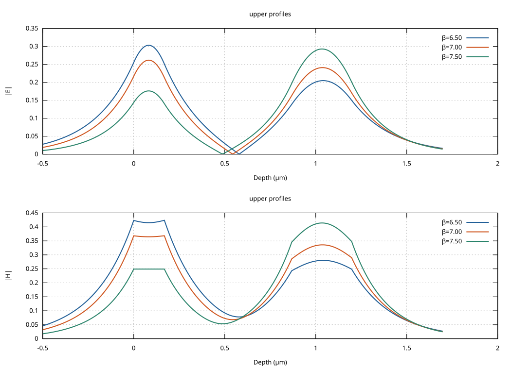
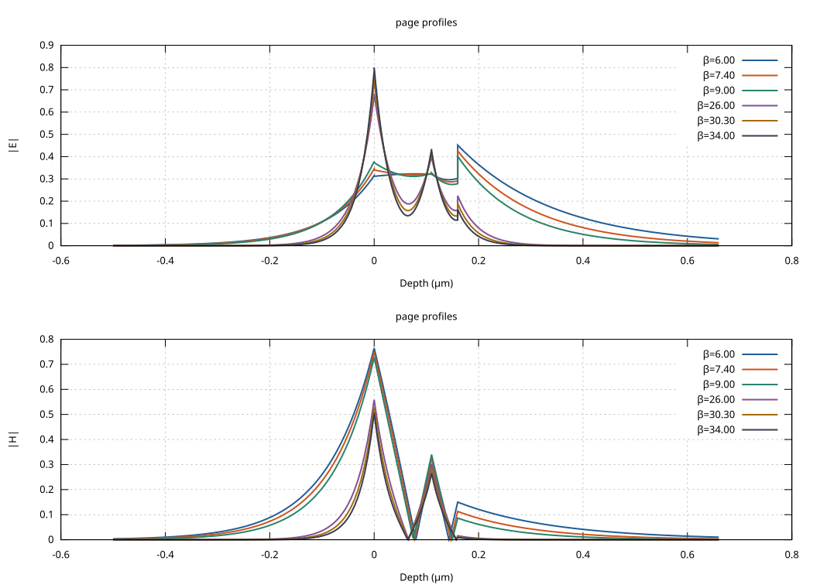

Circles are accepted continuation points. Lines are independent interface solutions. The real-frequency slice gives spatial attenuation and the real-wavevector slice gives temporal decay.

At the uncoupled crossing the finite gap gives a splitting of 0.04578 µm⁻¹. On the Page branch the real group velocity changes sign at β ≈ 7.407 and 30.335 µm⁻¹.

The depth axis starts at the first core. Each trace uses the accepted point at the indicated wavevector.

The two slab fields redistribute as the branches approach and separate.

The 110 nm semiconductor core spans 0 to 0.11 µm. The 50 nm ITO cap ends at 0.16 µm.

Field amplitudes use unit-delta pole. The CSV files retain all six complex components and the exterior wavevectors.
Stopped-light reference: Page, Chapter 3, Tables 3.1–3.2. Numerical comparisons and profile gauges.